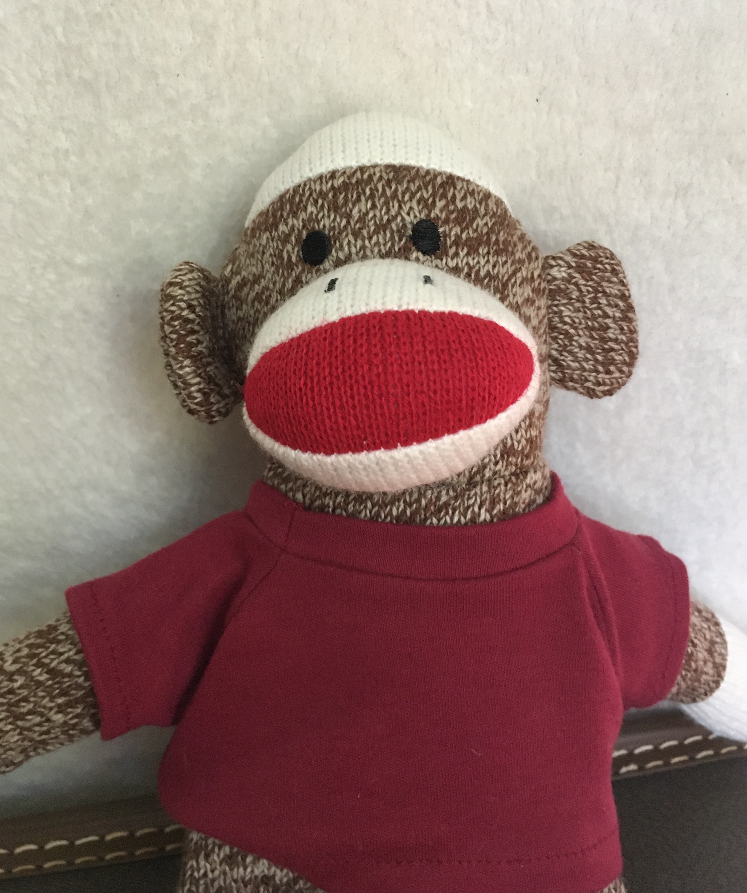
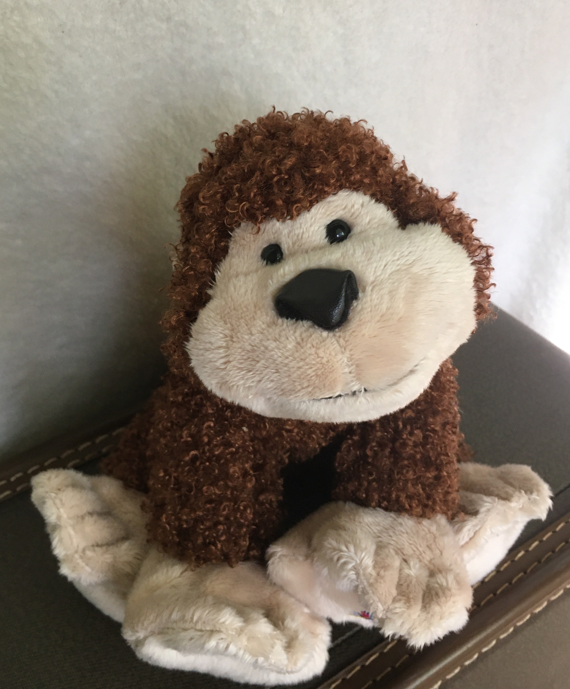
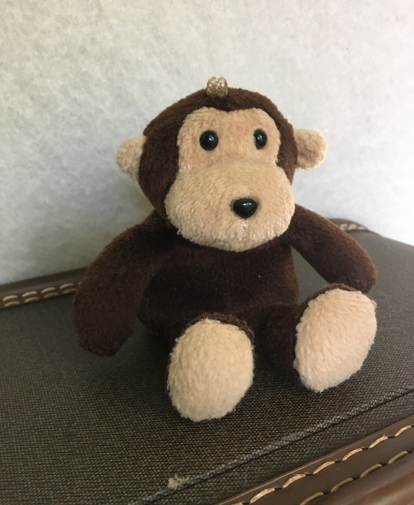

Meet the Candidates!
Chaussette
Chaussette has served on the monkey council for two years. She got into politics because she cares about the Treeville community and wants to make sure that no monkey goes hungry. Chaussette comes from a working-class background and knows what it's like to be hungry. She also knows how to negotiate a tough bargain. Her top priority is working with banana distributors to secure Treeville's supply. She also will continue to lead the town's educational programs about alternative local food sources.
Swinger
As a prize-winning scientist, Swinger knows that something is wrong with the air in Treeville. She has spent the past five years gathering data from all over the canopy, and now she's running for Mayor for a chance to address the problem of air pollution directly. The main source of pollution is the neighboring human village, and Swinger already has close working contacts with humans who she will pressure to reduce emissions. She also has a plan to increase the density of the plants that do the most to clean the air.
Napoleon
He may be small, but Napoleon is tough from his years as a PatrolMonkey. Now, he's ready to move on from policing petty crime and monkey-business, and take on the biggest threat to Treeville: the humans. It's no secret that human colonization of Treeville's land is accelerating, and as Mayor, Napoleon will take a firm stance against the humans to ensure that not one more tree will be felled. Recognizing that humans are our cousins, Napoleon also plans to start an outreach program to humans interested in tree-style living.